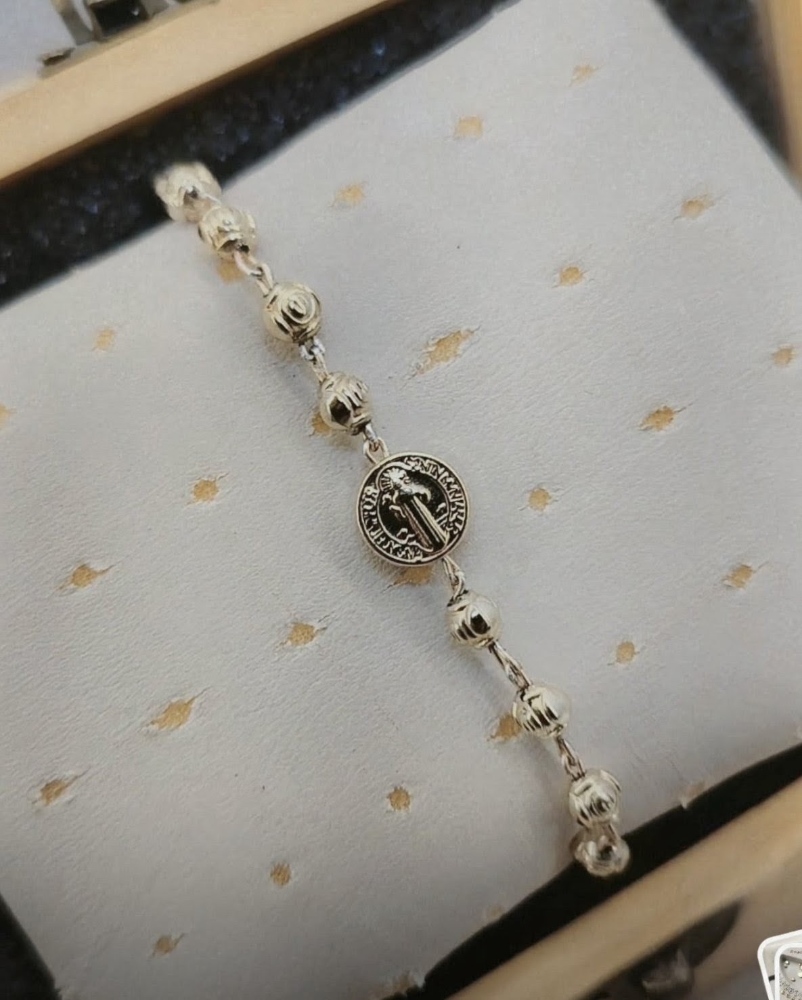
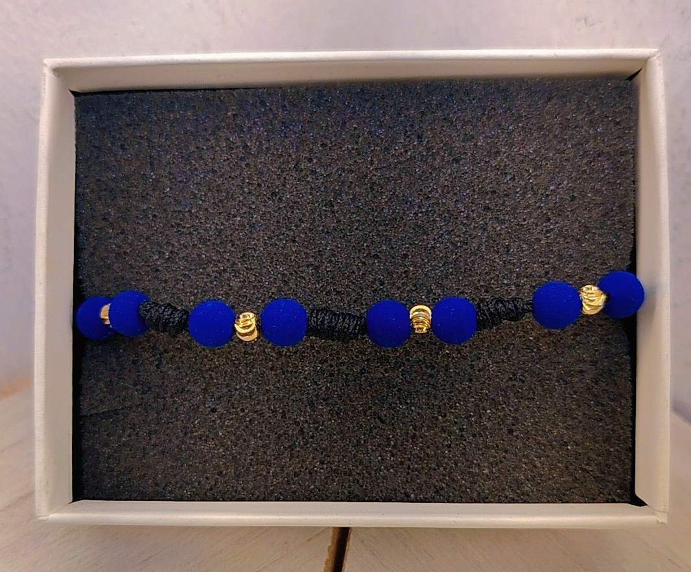
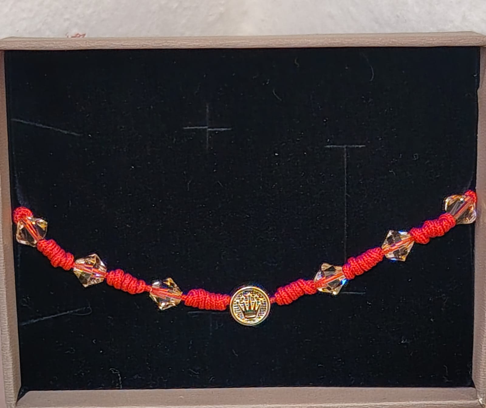
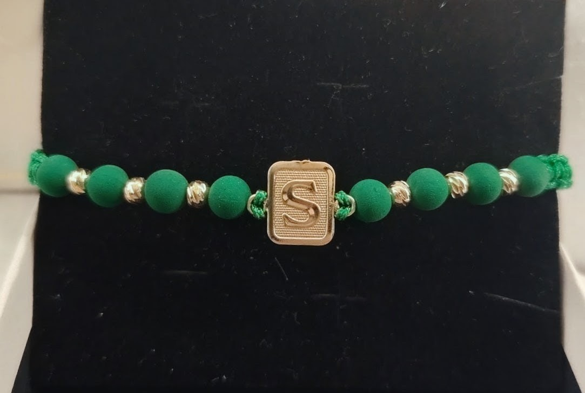
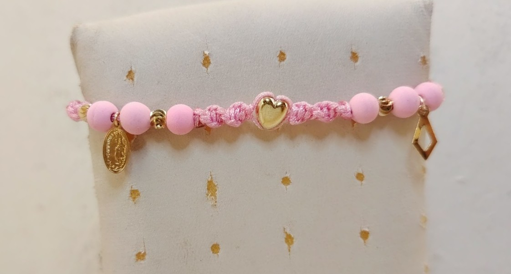
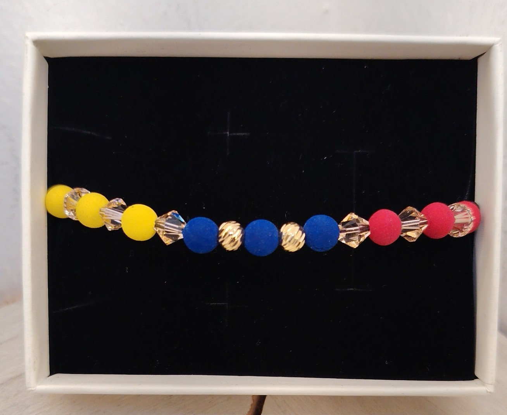
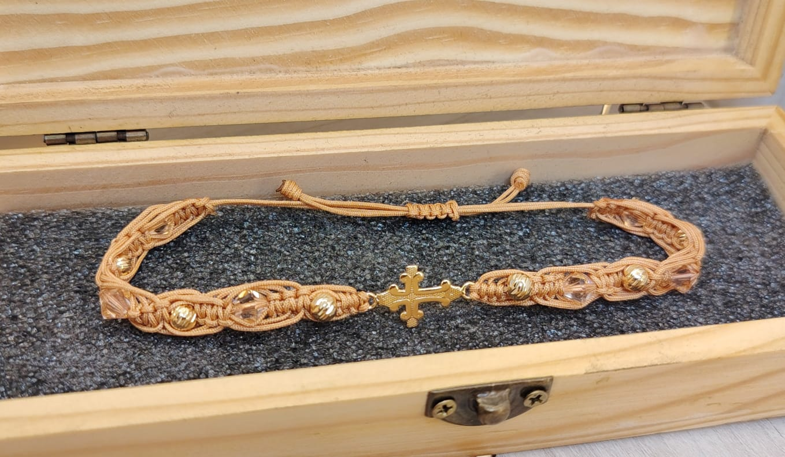
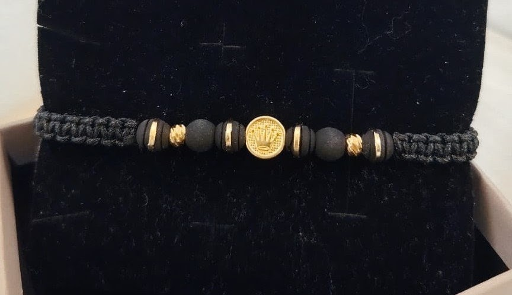

Nuestra Colección
.jpeg)
Manilla Bicolor Macramé
Tejido en hilos negro y beige con balines dorados engastados de manera continua.
Inspeccionar pieza.jpeg)
Manilla Neopreno & Balines
Tejido beige con detalles intercalados de neopreno negro y balines dorados.
Inspeccionar pieza.jpeg)
Manilla Virgen de Guadalupe
Tejido en hilo negro con medalla religiosa dorada, neopreno blanco y balines de lujo.
Inspeccionar pieza
Manilla Tejida Beige Placa Dorada
Tejido fino en hilo beige con dije central en placa dorada y nudo ajustable.
Inspeccionar pieza.jpeg)
Manilla Con Dos Balines de Oro
Tejido en hilo negro con balines de oro laminado de 18k, dando un toque de lujo.
Inspeccionar pieza
Manilla Con 15 Balines de Oro
Tejido en hilo negro con balines de oro laminado de 18k, se adapta al estilo de cada cliente.
Inspeccionar pieza.jpeg)
Pulsera Carmesí
Pulsera artesanal tejida en hilos negro y blanco, adornada con neopreno rojo y detalle dorado central.
Inspeccionar pieza.jpeg)
Manilla Trenzada Roja & Dorada
Estructura trenzada en rojo intenso con neopreno rojo y dije central con toques dorados.
Inspeccionar pieza.jpeg)
Manilla Macramé
Diseño personalizado con neopreno.
Inspeccionar pieza.jpeg)
Manilla Tres Carriles
Manilla personalizada con diseño único que se adapta a tu estilo.
Inspeccionar pieza
Manilla Virgen de Guadalupe
Manilla religiosa personalizada, contiene 8 balines de oro laminados de 18k y 2 balines de plata.
Inspeccionar pieza
Pulsera Rosario / San Benito de Oro
Pulsera fina elaborada en cadena y balines metálicos dorados facetados con medalla central de San Benito.
Inspeccionar pieza
Pulsera Azul Imperial con Balines Dorados
Diseño en hilo negro con cuentas mate azul rey y balines metálicos dorados intercalados.
Inspeccionar pieza
Pulsera Protección Roja con Cristales y Corona
Hilo rojo tejido en macramé con cristales facetados y dije central dorado de corona.
Inspeccionar pieza
Pulsera Verde Esmeralda con Placa Dorada
Cuentas mate verde esmeralda con balines dorados y placa rectangular dorada central.
Inspeccionar pieza
Pulsera Romántica Rosa con Medalla y Dije
Tejida en hilo rosa pastel con dije dorado, medalla religiosa y colgante geométrico.
Inspeccionar pieza
Pulsera Tricolor con Cristales
Diseño tricolor en cuentas mate (amarillo, azul y rojo) con cristales y balines dorados labrados.
Inspeccionar pieza
Pulsera de Fe Tejida en Macramé Tono Beige
Tejido ancho de macramé en tono beige con cruz metálica dorada y cristales facetados.
Inspeccionar pieza
Pulsera Elegante Negra con Dije Corona
Diseño sobrio tejido en macramé negro con cuentas mate, detalles dorados y dije central de corona.
Inspeccionar pieza
Cadena Serpiente en Oro Laminado
Una cadena elegante y moderna, fabricada con oro laminado de alta calidad. Su diseño minimalista la hace perfecta para usar en ocasiones especiales o como accesorio diario.
Inspeccionar pieza
Cadena Flecha en Oro Laminado
Lleva tu estilo al siguiente nivel con esta impactante cadena C Arrow. Su diseño geométrico en forma de flecha tridimensional le aporta un brillo único.
Inspeccionar pieza
Pulsera Roja con Balines y Medalla de Ángel
Hilo y cuentas rojas mate con balines dorados y medalla circular central con relieve de ángel.
Inspeccionar pieza
Pulsera Rosario de Oro Laminado con Medalla de la Virgen
Balines facetados en oro laminado de 18k con medalla central ovalada de la Virgen.
Inspeccionar pieza
Manilla Rosa Pastel con Placa Dorada
Tejido en hilo rosa pastel con balines dorados y placa cuadrada central en dorado.
Inspeccionar pieza.jpeg)
Pulsera Tejida Rosa con Balines Dorados
Tejido fino en macramé rosa con balines dorados facetados en el centro.
Inspeccionar pieza.jpeg)
Manilla Bicolor Negra y Roja Corona
Tejido entrelazado negro y rojo con medalla central de corona y balines dorados.
Inspeccionar pieza.jpeg)
Pulsera Tejida Rosa Pastel con Balines Facetados
Tejido macramé con composición simétrica de balines dorados de textura fina.
Inspeccionar pieza
Manilla Bicolor Negra y Rosa
Tejido bicolor negro y rosa con balines dorados y detalles centrales elegantes.
Inspeccionar pieza.jpeg)
Pulsera Roja Protección con 3 Balines
Tejido serpiente en hilo rojo con 3 balines de oro laminado grabados con detalles únicos.
Inspeccionar pieza
Pulsera Rosario de Oro Laminado con Cruz Central
Diseño de lujo en oro laminado de 18k con balines facetados y detalle central de cruz labrada.
Inspeccionar pieza
Manilla Negra con Placa Dorada
Esferas mate negras, balines dorados facetados y placa central texturizada en oro.
Inspeccionar pieza.jpeg)
Pulsera Verde Esmeralda con Cruz Labrada
Cuentas verde esmeralda mate, balines dorados acanalados y cruz calada central en oro laminado.
Inspeccionar pieza
Pulsera Dorada de San Benito en Oro Laminado
Balines facetados de oro laminado 18k con medalla circular de San Benito en el centro.
Inspeccionar pieza
Manilla Tejida Roja y Negra San Benito
Tejido bicolor rojo y negro con balines de oro laminado y medalla protectora de San Benito.
Inspeccionar pieza